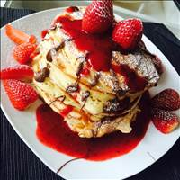
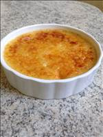
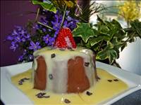
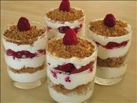
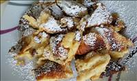
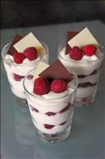
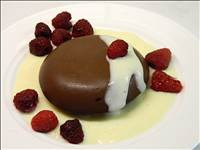
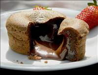
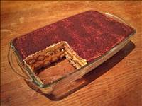

Rezepte
Amerikanische Pancakes

Zutaten:
150 g Mehl
100 ml Milch
200 ml Naturjoghurt
2 EL Zucker
1 Pck. Backpulver
3 Ei(er)
1 Prise(n) Salz
Olivenöl
AhornsirupZubereitung:
Die Eier zu einer schönen hellen Schaummasse verquirlen.
Milch und Naturjoghurt vermischen, ich nehme etwa 200 ml Joghurt, den Rest Milch. Ihr könnt auch mehr oder weniger Joghurt nehmen, je nachdem was Ihr gerade da habt. Das macht die Pancakes so richtig schön dick und saftig!
Mehl, Backpulver, Milch-Joghurt-Mischung, Salz und Zucker nach und nach zu den Eiern geben und immer schön weiter rühren. Evtl. etwas Milch zufügen wenn der Teig zu dick ist. Aber er sollte schon gut dickflüssig sein.
Die Pfanne auf mittlerer Stufe erhitzen, jeweils etwa einen TL Olivenöl hineingeben und nacheinander den ganzen Teig zu Pancakes verbacken. Wichtig! Ganz wenig Öl verwenden und langsam, also auf mittlerer Stufe nicht zu heiß ausbacken.
Arbeitszeit: ca. 10 Min.
Koch-/Backzeit: ca. 10 Min.Armer Ritter gerollt mit Erdbeeren

Zutaten:
4 Scheibe/n Toastbrot
6 Erdbeeren
1 m.-großes Ei(er)
3 EL Milch
1 TL Zimtpulver
4 TL Zucker
etwas Butter
4 EL Nutella, oder FrischkäseZubereitung:
Man nehme das Toastbrot und schneide den Rand ab. Dann rollt man das Toastbrot dünn aus. Bestreicht dann das Toastbrot mit Nutella oder Frischkäse.
Die Erdbeeren waschen, in Stücke schneiden und auf dem vorderen Rand des Toastbrotes verteilen. Nicht zu viel, nicht zu wenig. Dann das Ganze einrollen. Durch den Aufstrich hält es zusammen.
Nun verquirlt ihr das Ei mit der Milch. Manche geben in diese Masse auch noch Zucker und Zimt, das ist mir aber zu süß. Wenn das Ganze verquirlt ist, legt man die Röllchen in die Eimasse und wendet sie, sodass sie von allen Seiten mit Ei bedeckt sind.
Nun die Pfanne mit der Butter erhitzen und die Röllchen zuerst mit der "Naht" nach unten anbraten, dann von allen vier Seiten braten, bis sie goldbraun sind.
Den Zimt und Zucker vermengen und die heißen Röllchen darin wälzen.
Nach Belieben kann man die Röllchen mit Sahne oder Eis, oder auch pur essen.
Arbeitszeit: ca. 10 Min.
Koch-/Backzeit: ca. 4 Min.Crème brûlée

Zutaten:
400 ml Sahne mit hohem Fettgehalt
140 ml Vollmilch
85 g Zucker, braun oder weiß
5 Eigelb
1 Vanilleschote(n), das Mark, evt. auch etwas flüssige Vanilleessenz
Zitronenabrieb
Zucker, fein, weiß, zum KaramellisierenZubereitung:
Sahne, Milch und Eigelb verquirlen und mit den restlichen Zutaten mischen (niemals den Zucker auf das unverquirlte Eigelb geben, denn das gibt fiese kleine Zucker-Eigelb-Krümelchen die sich nicht mehr vollständig auflösen). Nun alles mind. 30 Minuten ziehen lassen (geht auch über Nacht).
In feuerfeste Förmchen füllen (in 4 größere Förmchen für 4 gierige Crème-brulée-Fans, oder in 6 kleinere) und in die Fettpfanne des auf 150°C vorgeheizten Backofens auf die mittlere Schiene stellen. Die Fettpfanne bis zum Rand mit kochendem Wasser füllen und die Crème 55 Minuten stocken lassen. Die Oberseite wird etwas blasig und braun, macht aber nichts.
Die Förmchen auskühlen lassen (die Masse ist direkt aus dem Ofen noch wabbelig, aber das ändert sich, wenn sie kalt ist) und im Kühlschrank mind. 2 Stunden durchkühlen (geht ebenfalls über Nacht). Ich stelle die Crème vor dem Brulieren (Karamellisieren) noch einmal kurz ins Eisfach, damit sie wirklich schön kalt ist.
Nun kommt noch die krachige Karamellschicht drauf. Ich verteile dazu auf jedem Förmchen ca. 1 EL feinen, weißen Zucker (brauner Zucker verbrennt zu schnell) und überflamme es langsam und gleichmäßig mit einem Flambierbrenner (Candyman), bis sich eine glatte Schicct gebildet hat. Es soll auch unter dem Backofengrill gehen, aber darüber habe ich keine Erfahrungswerte.
Arbeitszeit: ca. 20 Min.
Koch-/Backzeit: ca. 55 Min.
Ruhezeit: ca. 4 Std.Death by Chocolate - Pudding

Zutaten:
200 ml Sahne
300 ml Wasser
1 Prise(n) Salz
3 EL Rohrzucker (Rohrohrzucker)
30 g Speisestärke
10 g Kakaopulver
100 g Schokolade (Zartbitter)Zubereitung:
Die Sahne und das Wasser mischen und 400 ml davon in einen, mit kaltem Wasser ausgespülten Topf geben.
Die restlichen 100 ml der Sahne-Wassermischung mit dem Salz, dem Zucker, der Speisestärke und dem Kakaopulver klümpchenfrei verrühren. Dann in den Topf schütten und unter ständigem Rühren aufkochen, bis die Speisestärke andickt.
Von der Herdplatte nehmen.
Die Zartbitterschokolade in kleine Stückchen brechen, im Pudding schmelzen lassen und verrühren.
Tipp 1: Zum Puddingkochen in der Mikrowelle alle Zutaten (bis auf die Zartbitterschokolade) in ein mikrowellengeeignetes, mit kaltem Wasser ausgespültes Gefäß geben und bei 600 Watt 3 x 2 Minuten offen aufkochen - in den "Pausen" stets durchrühren, damit sich die Speisestärke gut verteilt. Dann die Zartbitterschokolade in Stückchen zugeben und unter Rühren schmelzen.
Tipp 2: Man kann auch Vollmilch-, Haselnuss- oder Mokkaschokolade verwenden. Dann jedoch die Zuckermenge anpassen.
Tipp 3: Wenn es ein sturzfähiger Pudding werden soll, die Flüssigkeitsmenge um 50 ml reduzieren.
Arbeitszeit: ca. 10 Min.Himbeerdessert mit Spekulatius

Zutaten:
200 ml Sahne
250 g Quark
250 g Mascarpone
125 g Zucker
1 Pck. Vanillezucker
350 g Himbeeren, TK
250 g SpekulatiusZubereitung:
Die Sahne schlagen. Quark, Mascarpone, Zucker und Vanillezucker mischen. Die Sahne unterheben.
In einer ausreichend hohen eckigen oder runden Schüssel mit drei, vier EL Creme den Boden bedecken. Darauf eine Schicht Spekulatius, ganz oder in Stücke gebrochen, verteilen. Die Hälfte der restlichen Creme darauf verstreichen. Die gefrorenen Himbeeren darüber verteilen, diese mit dem Rest der Creme bedecken, so dass sie nicht mehr zu sehen sind. Zerbröckelten Spekulatius (Menge nach Belieben) darüber verteilen.
Die Creme muss mindestens 4 Stunden kalt gestellt werden.
Vor dem Servieren kann man noch etwas Puderzucker drüber streuen.
Arbeitszeit: ca. 20 Min.
Ruhezeit: ca. 4 Std.Kaiserschmarrn

Zutaten:
100 g Rosinen
5 EL Rum oder Cognac oder Wasser
6 Eigelb
1 Pck. Bourbon-Vanillezucker
1 EL, gehäuft Zucker
1 Prise(n) Salz
250 g Mehl
500 ml Milch
50 g Butter, zerlassen
6 Eiweiß
4 TL PuderzuckeZubereitung:
Die Rosinen in 5 EL Rum mindestens eine halbe Stunde einlegen. Wer keinen Rum mag, nimmt Cognac. Kinder und Antialkoholiker nehmen Wasser.
Das Eigelb mit dem Vanillezucker, einer Prise Salz und 1 geh. EL Zucker mit dem Handrührgerät schaumig aufschlagen. Bloß keinen Vanillinzucker verwenden! Nach und nach abwechselnd jeweils einen Löffel Mehl und einen guten Schuss Milch einrühren, bis alles aufgebraucht ist.
Anschließend die zerlassene Butter einrühren. (Kalorienzähler: das könnt ihr auch sein lassen und Euch wundern, wieso das Zeug nicht so gut schmeckt, wie im Skiurlaub.) Eiweiß zu einem festen Eischnee aufschlagen und mit einem Löffel langsam aber gründlich unter die Teigmasse heben. Es sollten keine Eiweißflocken mehr zu sehen sein. Danach die Rosinen ohne den Rum unterrühren.
In einer Pfanne die Butter zerlassen und den Teig ca. 1 cm hoch eingießen. Hitze etwas reduzieren und goldgelb anbacken lassen. Immer mal wieder drunter schauen. Die Masse vierteln, umdrehen und wieder anbacken lassen. In mundgerechte Stücke teilen, mit 2 TL Zucker bestreuen und kurz karamellisieren lassen. Fast fertig: Auf Tellern anrichten und mit Puderzucker bestäuben.
Arbeitszeit: ca. 15 Min.
Koch-/Backzeit: ca. 15 Min.Mascarpone - Himbeer

Zutaten:
1 Becher Schlagsahne, 200 g, geschlagen
2 Becher Naturjoghurt, à 150 g
250 g Mascarpone
500 g Quark, Magerstufe
500 g Himbeeren, TK, nicht aufgetaut
200 g Zucker
Schokolade, weiße, geraspeltZubereitung:
Quark, Joghurt und Mascarpone gut mit dem Zucker verrühren; am besten das Handrührgerät benutzen, damit sich der Zucker gut löst. Dann die steif geschlagene Sahne unterheben.
Nun die gefrorenen Himbeeren und die Quarkmasse abwechselnd schichten (sieht in einer Glasschüssel am nettesten aus). Mit der geraspelten Schokolade bestreuen.
Muss mindestens 3 Stunden durchziehen (wegen der Himbeeren); kann man gut am Abend vorher zubereiten und dann im Kühlschrank aufbewahren.
Arbeitszeit: ca. 10 Min.
Ruhezeit: ca. 3 Std.Schoko-Pudding

Zutaten:
250 ml Milch 3,5 %ige
250 ml Sahne, (ungeschlagen)
130 g Schokolade (Vollmilchweihnachtsmänner oder andere Sorte)
40 g Zucker
1 EL Vanillezucker, selbstgemachter ODER:
1 Pck. Vanillezucker, Bourbon-
35 g Speisestärke
2 EL Rum, braunen, gute Qualität, ca.
1 EL Kakaopulver, echtes, gehäufter großer ELZubereitung:
2/3 der Milch und Sahne in Topf gießen. Schoko-Weihnachtsmänner zerbrechen und dazu geben. Schmelzen lassen. Mit Rührbesen glatt rühren.
Zucker, Vanillezucker, Speisestärke und Kakaopulver vermischen und mit der restlichen kalten Milch glatt rühren - es dürfen keine Klümpchen mehr vorhanden sein.
Angerührtes Pulver in die kochende Milch schütten und mit einem Schneebesen kräftig rühren. Aufkochen lassen und ca. 1 Minute kochen lassen unter ständigem Rühren.
Rum zugießen, unterrühren. Wenn Kinder mitessen, den Rum weglassen. Wenn der Rum erst zum Schluss zugegeben wird, kann man die Masse auch teilen: für Kinder "ohne" und für Erwachsene "mit" Schuss...
Heißen Pudding in Schälchen füllen und auskühlen lassen. Nach Wunsch mit etwas geschlagener Sahne und Haselnuss-Karamell verzieren.
Arbeitszeit: ca. 5 Min.
Koch-/Backzeit: ca. 3 Min.Schokosoufflee

Zutaten:
100 g Butter
80 g Zucker
2 Eigelb
2 Ei(er)
80 g Mehl
90 g ZartbitterkuvertüreZubereitung:
Die weiche Butter mit dem Zucker schaumig schlagen. Eier und Eigelb nach und nach unterziehen, Mehl und geschmolzene Kuvertüre zugeben und in gebutterte Auflaufförmchen füllen. Förmchen schockfrosten (komplett durchfrieren lassen) und im gefrorenen Zustand im Ofen bei 180 Grad 15 - 16 Min. backen.
Sofort warm servieren. Der Clou dabei ist, dass der Schokokern flüssig bleibt und beim Anschneiden ausläuft (deshalb medium). Dazu passen Zimteisnocken, eingelegte Feigen oder andere Winterfrüchte.
Arbeitszeit: ca. 30 Min.
Koch-/Backzeit: ca. 16 Min.Tiramisu

Zutaten:
100 g Puderzucker
4 Eigelb
2 Eiweiß
2 cl Amaretto
2 Tasse/n Kaffee, stark, oder Espresso
500 g Mascarpone
250 g Löffelbiskuits
etwas KakaopulverZubereitung:
Eigelb, Puderzucker, Mascarpone und Amaretto cremig rühren. Das Eiweiß steif schlagen und vorsichtig unterheben.
Die Löffelbiskuits mit dem Espresso/starken Kaffee tränken oder nach Geschmack auch nur einpinseln.
4 Lagen schichten: Beginnen mit Biskuits, dann Mascarponecreme, Biskuits und wieder Mascarponecreme. Dick mit Kakao bestäuben und kühl stellen.
Arbeitszeit: ca. 30 Min.
Ruhezeit: ca. 1 Std.